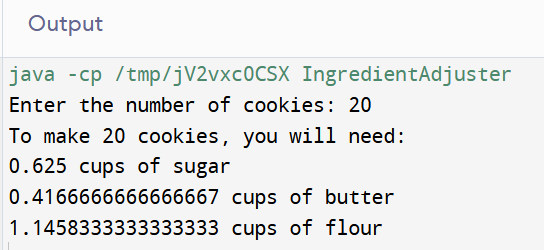

The IngredientAdjuster class displays the quantities of sugar, butter and flour needed to prepare cookies (by entering the number of cookies as input at keyboard).

Please click the .java file name for the GitHub link: IngredientAdjuster.java
import java.util.Scanner;
public class IngredientAdjuster {
public static void main(String[] args) {
int cookies = 48; // Cookies already cooked.
int makeCookies; // Number of cookies to be made.
double sugarCup = 1.5; // Sugar quantity per cup.
double butterCup = 1; // Butter quantity per cup.
double flourCup = 2.75; // Flour quantity per cup.
double sugar, butter, flour; // Quantities to make cookies.
// Create a Scanner object to read keyboard input.
Scanner keyboard = new Scanner(System.in);
// Get the number of cookies to be made.
System.out.print("Enter the number of cookies: ");
makeCookies = keyboard.nextInt();
// Calculate the quantities for cookies to be made.
sugar = makeCookies * sugarCup / cookies;
butter = makeCookies * butterCup / cookies;
flour = makeCookies * flourCup / cookies;
// Display quantities for cookies to be made.
System.out.println("To make " + makeCookies + " cookies, " +
"you will need: \n" +
sugar + " cups of sugar\n" +
butter + " cups of butter\n" +
flour + " cups of flour");
}
}